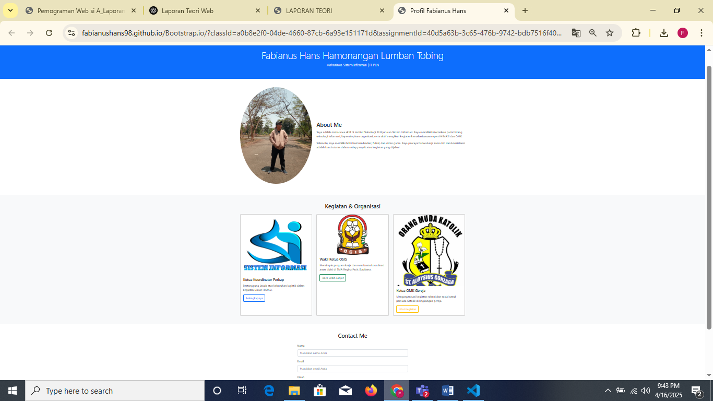

CSS digunakan untuk mempercantik tampilan web, mengatur layout, warna, font, dan efek visual agar lebih menarik dan mudah dibaca. JavaScript digunakan untuk membuat halaman web menjadi interaktif, seperti menangani event pengguna (klik, input), memanipulasi elemen HTML secara dinamis, dan membuat aplikasi web menjadi lebih responsif dan dinamis.
CSS dapat diintegrasikan langsung menggunakan tag <style> di dalam <head>, atau melalui file eksternal menggunakan <link>. JavaScript dapat ditulis dalam tag <script> atau file terpisah dan dihubungkan dengan <script src="...">. Keduanya digunakan untuk memisahkan antara logika (JS), gaya (CSS), dan struktur (HTML).
Keuntungan CSS: mempercepat proses desain, membuat tampilan lebih konsisten, dan meningkatkan UX/UI. Keuntungan JavaScript: meningkatkan interaktivitas, mengurangi beban server, mempercepat respon halaman tanpa reload, dan memungkinkan pembuatan aplikasi web kompleks.
Bootstrap adalah framework CSS yang membantu mempercepat pembuatan UI yang responsif. Keuntungannya adalah hemat waktu, mobile-first, sudah tersedia banyak komponen siap pakai (seperti navbar, tombol, form), serta dukungan grid system yang kuat.
Berikut contoh penggunaan komponen tombol Bootstrap:
<button class="btn btn-success">Klik Saya</button>Fungsinya adalah untuk membuat tombol dengan tampilan menarik dan standar Bootstrap tanpa perlu menulis CSS tambahan.
Hasilnya:
Screenshot Hasil (Simulasi):
